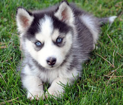

 El husky siberiano es un perro de tamaño medio ligeramente más largo que alto cuya altura oscila entre los 50 y los 60 cm y el peso entre los 20 y los 35 kg. El husky siberiano tiene las orejas erguidas y los ojos de marrones a azules o también dispares. Lleva el cuello recto y la línea superior está nivelada. La cola, bien cubierta de pelo, forma una hoz hacia arriba o bien se extiende hacia atrás. Tienen un pelo muy denso y afelpado con una importante capa interna. Tienen un pequeño collar de pelo alrededor del cuello, pero no tienen flecos largos en las patas ni en la cola. Los colores van del negro al blanco pasando por todas las opciones intermedias. Las mayoría de estos perros tienen marcas blancas, especialmente en el pecho y las patas. Los huskies siberianos crecieron en condiciones muy duras y, como era de esperar, son perros fáciles de mantener. Pueden padecer obesidad fácilmente si se los sobrealimenta o si no practican ejercicio. Son perros criados para correr, y deben echarse una buena carrera al menos un par de veces a la semana. Los Huskies siberianos tienden a ser perros robustos y suelen vivir hasta los 14 años.